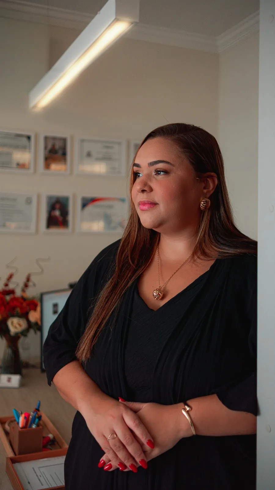
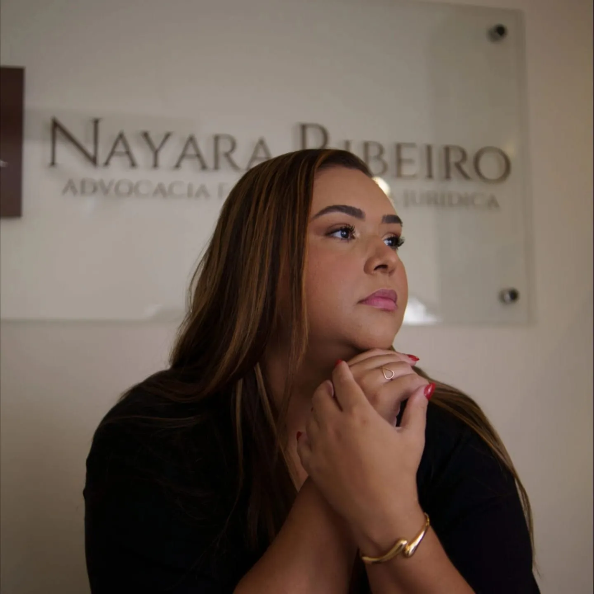
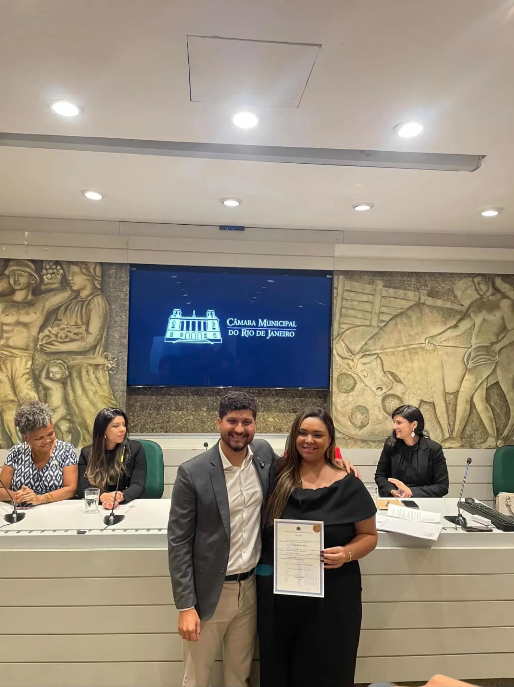
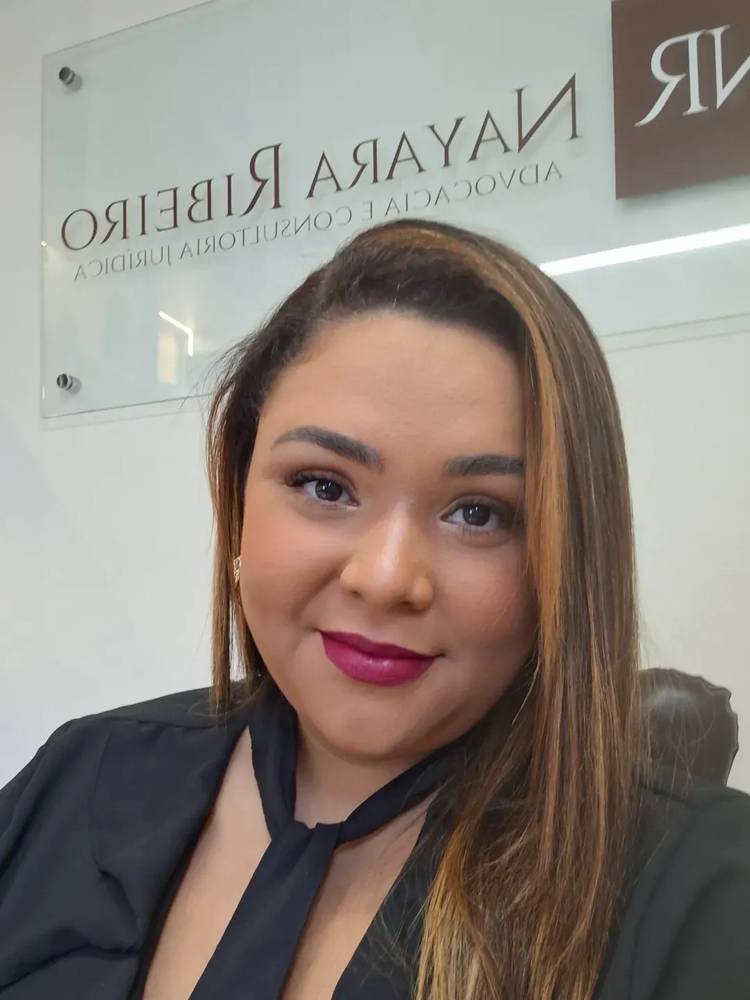

Dra. Nayara
Ribeiro
Treze anos de advocacia em Direito Imobiliário, Civil, Família, Sucessões e Consumidor. Fundadora do NR Advocacia, Presidente da Comissão de Direito Imobiliário da OAB Campo Grande/RJ e homenageada pela Câmara Municipal do Rio de Janeiro.
A advocacia de excelência exige o equilíbrio entre o rigor da técnica e a sensibilidade do atendimento. Cada caso é uma história. Cada história, um patrimônio para proteger.

Advocacia com propósito,
liderança com resultado.
Nayara Peçanha Ribeiro é advogada com atuação nas áreas de Direito Imobiliário, Civil, Família, Sucessões e Consumidor, com especial destaque para regularização de imóveis, usucapião judicial e extrajudicial, inventários, divórcios, pensão alimentícia, adoção e assessoria para compra e venda de imóveis.
Fundadora e CEO do escritório NR Advocacia, construiu sua trajetória profissional com foco na proteção patrimonial, na segurança jurídica das famílias e na valorização dos imóveis por meio da regularização imobiliária.
Presidente da Comissão de
Direito Imobiliário — OAB/RJ
Na OAB, exerce papel de liderança como Presidente da Comissão de Direito Imobiliário da 29ª Subseção de Campo Grande/RJ, contribuindo para a capacitação profissional, realização de eventos jurídicos e aproximação entre a advocacia, cartórios, registradores e a sociedade.
Também é cofundadora do projeto Inovajuri, comunidade jurídica que reúne centenas de advogados com o propósito de promover conhecimento, inovação, networking e fortalecimento da advocacia.
Moção de Reconhecimento
da Câmara Municipal RJ
Recentemente, recebeu Moção de Reconhecimento e Aplausos da Câmara Municipal do Rio de Janeiro, em homenagem à sua atuação como mulher advogada e profissional do Direito Imobiliário.
Sua trajetória é marcada pelo compromisso com a advocacia desjudicializada, a regularização patrimonial e a transformação de imóveis irregulares em patrimônio seguro, valorizado e capaz de proteger histórias, famílias e legados.
— Câmara Municipal do Rio de JaneiroReferência em regularização
fundiária
É referência em regularização fundiária na região e realiza treinamentos jurídicos para corretores imobiliários — incluindo parceria com a Imobiliária Lopes, ensinando interpretação de matrículas, transcrições e projetos de PAL.
O escritório oferece atendimento presencial em Campo Grande, Zona Oeste do Rio de Janeiro, e atendimento virtual em todo o estado do RJ — de segunda a sexta, das 9h às 18h no escritório, com atendimento virtual até as 22h.
Uma carreira construída com consistência e visão.
Início da Advocacia
Começo da jornada profissional com dedicação ao Direito Civil e Imobiliário, construindo uma base técnica sólida na Zona Oeste do Rio de Janeiro.
Cofundadora do Inovajuri
Lançamento da comunidade jurídica Inovajuri, reunindo centenas de advogados em torno do conhecimento, inovação e fortalecimento da advocacia brasileira.
Presidente da Comissão de Direito Imobiliário — OAB
Eleita Presidente da Comissão de Direito Imobiliário da 29ª Subseção de Campo Grande/RJ, promovendo capacitação profissional e integração entre advocacia e sociedade.
Líder da Comissão de Usucapião — ABAMI
Atuação como líder da Comissão de Usucapião Judicial e Extrajudicial da ABAMI, contribuindo para o desenvolvimento de práticas e conhecimento na área.
Moção de Reconhecimento — Câmara Municipal RJ
Homenagem em sessão solene no Palácio Pedro Ernesto, reconhecendo sua atuação como mulher advogada, profissional do Direito Imobiliário e liderança institucional.
Reconhecimentos que validam a trajetória.





Prefiro dizer cedo que um caso não é viável do que prometer o impossível. Essa é a base da confiança que construo com cada cliente.
A Dra. Nayara em cada contexto da sua atuação.
 Atendimento ao Cliente
Atendimento ao Cliente

Moção de Reconhecimento
Presidente Comissão OAB

NR Advocacia Análise de Planta
Análise de Planta
 Regularização
Regularização
 Biblioteca Jurídica
Biblioteca Jurídica
Agende uma conversa com a Dra. Nayara.
Atendimento presencial em Campo Grande, Zona Oeste do Rio de Janeiro, e virtual em todo o estado do RJ. Segunda a sexta, das 9h às 18h no escritório, com atendimento virtual até as 22h.